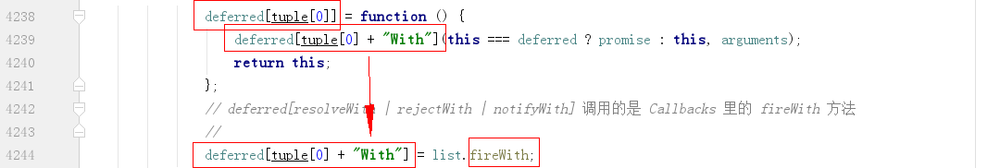

jQuery源码分析————Promise
jQuery.Deferred
$.Deferred()返回1个deferred对象。该deferred对象就是jQuery的回调函数解决方案。首先，调用$.Deferred()返回 1 个 deferred 对象。在外部通过链式调用使用 done/fail/progress/then 等方法（就是 add 方法，换个名而已）添加对应的处理回调，内部分别保存到不同的回调列表中。与此对应，当异步进行中/结束，可以通过 notify/reject/resolve 方法（本质是 fire 方法，也是换个名而已）触发，从而实现异步。
还有 1 个非常重要的问题，尽管将回调列表中的 add 等方法添加到 promise/deferred 中，但这些方法中的 this 已不再指向回调列表，而是异步对象。
deferred 对象
定义 tuples 数组，内定义有 3 个回调函数列表，分别管理成功/失败/处理中 3 种状态。之所以定义为如下格式，目的是方便管理相同有共同特性的代码。once+memory 可以保证每个异步完成回调只调用 1 次（memory 为满足有的回调在异步之后 add，异步参数相同），memory 保证 progress 能够立即触发，且每次都触发所有的回调。
4 个元素分别表示动作、动作对应的监听器、监听器管理的回调函数队列、最终状态。
通过遍历 tuples 方式生成 deferred 对象的 6 个动作函数 deferred[resolve|reject|notify]和 deferred[resolveWith|rejectWith|notifyWith]。

为什么说 deferred[resolve|reject|notify]相当于中的 fire，因为看看源代码两者结果都一样。
同样在遍历中，定义 promise[done|fail|progress]方法，并将 promise 所有方法扩展到 deferred 对象上。
由此可见，deferred 对象也有 done/fail/progress 方法，其实就相当于 add 方法。
如何实现？
如下，根据定义可知，done/fail/progress 相当于 add 方法。
注意，在遍历定义 deferred 对象的那些 fire 方法时，定义了 3 个不同的 list。因此，上面 3 个方法添加到的是不同的队列。
在 read 中完成后，就可以使用 deferred 对象的 resolve|reject|notify 方法触发各自不同的队列。
同时，还在遍历是添加了如下代码（使用 lock），使得每次只可能触发 1 个队列。

存在的问题
直接返回 deferred 对象暴露了 fire 类型方法，因此需要再定义 1 个 promise 方法，只暴露 done,fail,always 这些个回调函数接口。
promise 对象
promise 对象是\$.Deferred 内部定义的 1 个对象，除遍历过程中定义的方法，还有定义了其他方法。
这里不仅把 promise 对象中的属性给了 deferred，当我们使用 deferred.promise()时，如果没有传参，返回的就是这个 promise。
always 语法糖
即，一次性定义好 done 和 fail 方法。注意，这里的 this 是 promise 对象自身。
then
如下，因 done()、fail()和 progress()方法返回的是 promise 对象，也就是不能再有新的 deferred 嵌套。
从 1.8 开始，then 不仅仅是 deferred.done(fnDone).fail(fnFail).progress(fnProgress)的快捷方式，而且返回的是 1 个新 deferred 对象的 promise 属性。
向 jQuery.Deferred 传递函数会立即执行，且传入这个函数的参数就是 jQuery.Deferred 内新创建的 deferred 对象。

执行传入的函数，通过遍历 tuples 方式，add 向 then 传入中的 3 个方法（对应 done、fail 和 progress）。当原先定义的延迟对象触发时就会执行这些 add 新构造的方法。
如果用户在这些回调中又使用了自己的 deferred，可以将新创建的 deferred 对应的 fire 作为参数 add 到用户返回的 deferred 中，从而实现。
\$.when
用于执行 1 个或多个包裹延迟对象监听函数的回调函数。如果所有任务都成功，内部通过新创建 1 个 deferred，当确定所有用户传入的异步参数都执行成功，触发新创建 deferred，将保存的每个任务的返回值到 1 个数组中，连同这个数组返回成功状态。当一个任务失败的时候，代表整个都失败。
remaining 用于维护状态。既然 when 中是异步，那么 resolveValues 中的元素就是异步。

updateFunc 返回的是 1 个回调，会被 done 执行。
ready
ready 方法是原型方法，使用如$(document).ready(fn)、$(“#id”).ready(fn)。定义如下：
jQuery.ready.promise()是静态方法，返回延迟对象。
改变延迟对象 readyList 状态的是在静态 jQuery.ready 方法中，当考虑各种兼容等情况后，满足条件时，调用 jQuery.ready 方法，执行下面代码。
关于 document.ready，浏览器解析完 HTML 内容、生成 DOM 树后，会触发 DOMContentLoaded 事件。此时页面上只是 DOM 节点就绪了，但是 js、css、图片等还处于待下载状态。之后，浏览器发送请求去下载 js、css、图片。全部下载结束的时候触发 onload 事件。